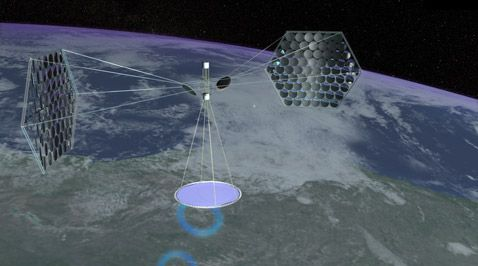
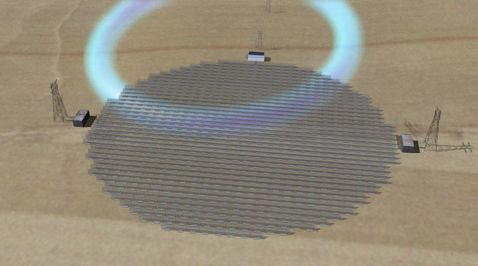

О космической энергетике

Может ли энергоснабжение, получаемое от космических источников энергии решить все энергетические проблемы человечества ? Специалисты компании Boeing и агентства NASA разрабатывают проект солнечной энергостанции космического базирования. Этот проект имеет название SBSP ( Space-Based Solar Power ) и представляет из себя по задумкам создателей сеть энергетических спутников, расположенных на геосинхронных орбитах. Эти спутники утилизируют получаемую солнечную энергию и передают ее вниз, на поверхность Земли в виде микроволнового излучения.
По сравнению с солнечными энергетическими установками, расположенными на поверхности планеты, установки космического базирования имеют целый ряд несомненных преимуществ. Первое, и самое главное, преимущество заключается в непрерывности действия подобной установки, получаемой за счет постоянного облучения установки солнечными лучами. Дополнительными преимуществами является полная независимость от погодных условий на поверхности планеты и угла наклона оси планеты.

Конечно, при практической реализации этой системы в жизнь возникает целый ряд проблем. Первая проблема связана с габаритными размерами антенны, передающей энергию на поверхность земли. Исследователи просчитали, что при передаче энергии микроволнами с частотой 2.45 ГГц диаметр передающей антенны будут близок к одному километру. При этом диаметр принимающей энергию области на поверхности Земли должен составлять не менее 10 километров.

Еще не до конца изучен вопрос о КПД при передаче энергии из космоса на Землю, но это вопрос не вызывает у исследователей больших волнений. На Земле были уже успешно проведены эксперименты по беспроводной передачи энергии на большие расстояния. В ходе одного из таких экспериментов была достигнута передача энергии на расстояние около 150 километров, что является значением близким к расстоянию от энергетического спутника до поверхности Земли.
Главное препятствие для начала реализации системы SBSP в жизнь это сумма денежных затрат необходимых для ее построения и вывода в околоземное пространство. Но, в нынешнее время ведутся работы по разработке и внедрению ракет-носителей нового типа SpaceX''s Falcon 9. Применение таких ракет-носителей позволит существенно снизить затраты на вывод в космос компонентов системы SBSP, и сделает этот проект ближе к реальности.
Представители организаций, занятых в работах над этим проектом, полны оптимизма. Они утверждают, что в случае начала финансирования программы в 2009 году, первый результат можно будет получить уже в 2017 году. Этим результатом будет запуск одного экспериментального энергетического спутника мощностью 100 МВт. Следующим шагом будет запуск на орбиту комплекса из пяти спутников, общей мощностью более 20 ГВт. Этот этап, по планам, может быть реализован уже в 2020 - 2025 годах.